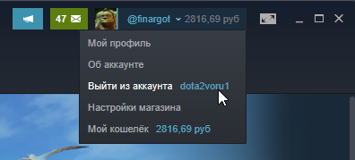

TG
TGКак работает пополнение
Наш сервис даёт возможность за добровольные пожертвования пополнить ваш кошелёк Steam в рублях, а также другие сервисы и игры. В связи с тем, что пополнить Steam напрямую на территории Беларуси и РФ невозможно – у нас имеется возможность пополения с комиссией, которую мы не можем спрогнозировать и наш сервис автоматически проводит платежи с минимальными издержками. Наша комиссия постоянна и составляет 3%, остальное - затраты на конвертацию валют и комиссию провайдеров. В связи с постоянными изменениями в курсах и комиссиях за конвертаци, могут быть случаи, когда на ваш Стим придёт на 1% меньше или больше средств. К сожалению, в случае меньшей суммы, мы не сможем возместить вам разницу, разве что если она превышает 50 рублей.
Что вводить в поле логина
В поле логина нужно вводить ваш аккаунт Steam, который вы используете при авторизации. Его также можно найти в клиенте Steam в правом верхнем углу. Если вы укажете неверный логин – мы не сможем вернуть вам средства или перевести на правильный аккаунт, будьте внимательны!

Какие кошельки можно пополнить
На нашем сайте также имеется возможность пополнить аккаунты из других регионов, которые будут постепенно появляться. Данные операции требуют ввода не логина Steam, а электронной почты, на которую будет выслан код для активации в Steam. Данные коды работают только в тех регионах, которые указаны при покупке! Мы не возвращаем средства если вы приобрели код, который невозможно активировать на вашем аккаунте из-за региональных ограничений!
Мы также не можем пополнить баланс аккаунтов, на которые выданы блокировки (Красная Табличка)
Средства не дошли
Очень редко могут случаться случаи, когда средства не доходят до вашего аккаунта Steam. Обычно, данные неполадки возникают не нашей стороне, но мы оперативно готовы помочь вам с данными проблемами, для решения которых нужно обратиться в нашу службу поддержки, чат которой находится в нижнем правом углу сайта.
Лимиты и ограничения
У нас присутствуют ограничения на минимальные суммы для всех способов зачисления. При этом есть лимит на максимальное пополнение баланса Steam за 24 часа – он равен 150 $
Вы можете попробовать превысить этот лимит, но на ваш страх и риск – в случае утери средств, возврат мы обеспечить не сможем. Также, в случае зачисления больших сумм мы рекомендуем разбивать их на несколько платежей по 2000-3000 рублей.
Способы пополнения
На данный момент на сервисе пополнение возможно через платёжную систему QIWI, включающую платежи через Банковские карты и Систему Быстрых Платежей. Мы работаем над расширением спектра возможных способов, включая мобильные платежи, криптовалюту и электронные кошельки.
Есть вопросы
На нашем сайте имеется удобная форма техподдержки, также вы можете подписаться на наш телеграм канал или паблик ВК, где вы найдете актуальные новости и сможете задать интересующие вас вопросы и мы вам ответим, как только сможем.
Created by: w_cod
 312412
312412